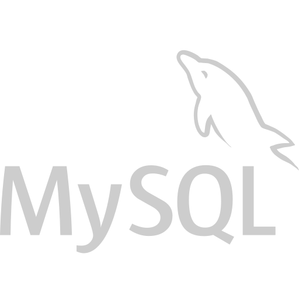
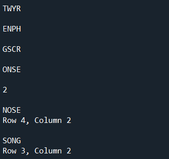
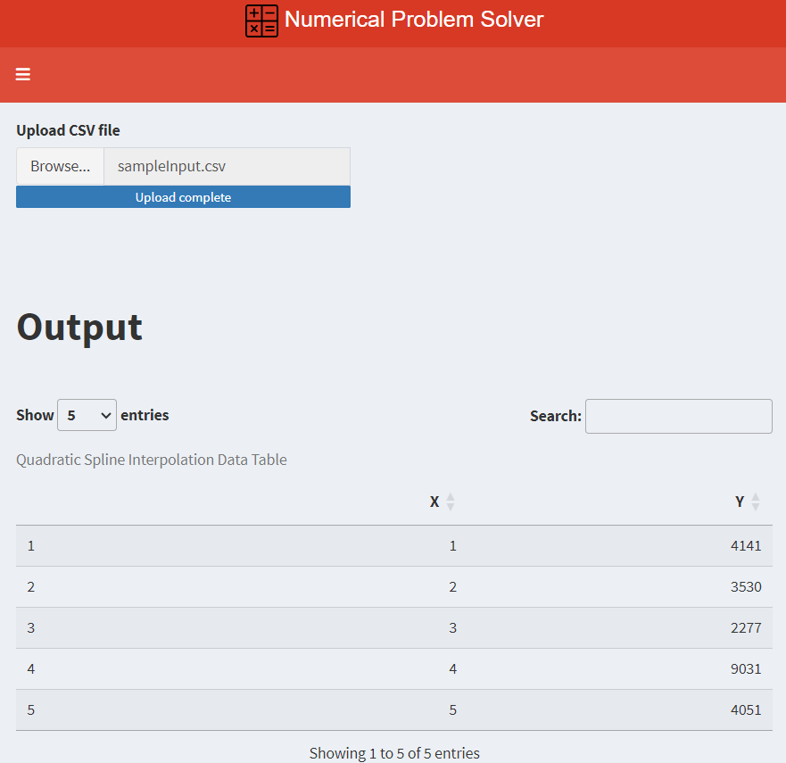
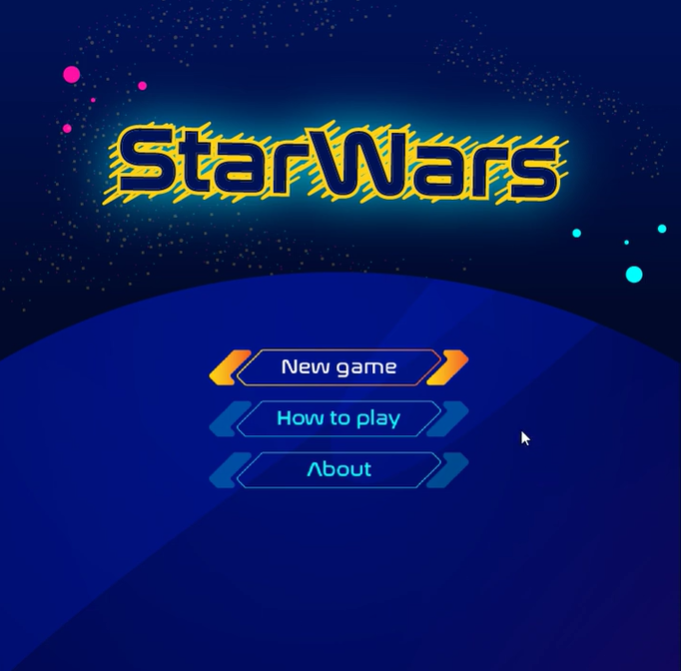

Technical Skills

Python

R

MySQL
Java
C
Nice to meet you! I am
VIVEK
CHAMBAL
Personal Projects
Boggle Solver
Boggle game solver using a backtracking algorithm in Python.
Numerical Problem Solver
Interprets and visualizes excel datasets using polynomial regression and quadratic spline interpolation.
Star Wars
Astronomy-themed Blob.io clone made using Java.
Technical Skills
Python
R
MySQL
Java
C
About Me
Hello there! I'm Vivekjeet Singh Chambal, a driven Computer Science student at the University of the Philippines Los Baños. With a burning passion for math, science, and technology, I'm on a journey to become a proficient data scientist in the future.
Ever since my junior high school days at Holy Rosary College, I've been captivated by the intricate beauty of numbers and the endless possibilities they hold. My senior high school experience at De La Salle University Integrated School Laguna Campus further solidified my love for problem-solving and analytical thinking.
As I tread further into the realms of academia, I find myself constantly seeking new challenges and opportunities to expand my knowledge. Whether it's diving into the depths of machine learning algorithms or unraveling the mysteries of big data analytics, I'm eager to explore mysteries of the technological field.
Outside of the digital realm, you'll often find me pursuing my hobbies with equal enthusiasm. From lifting weights at the gym to playing chess, I believe in the importance of maintaining a balanced lifestyle.
In the grand scheme of things, I envision myself utilizing my skills and expertise to make meaningful contributions to the field of data science. I am excited about the opportunities that lie ahead and eager to be on this journey of discovery and growth.